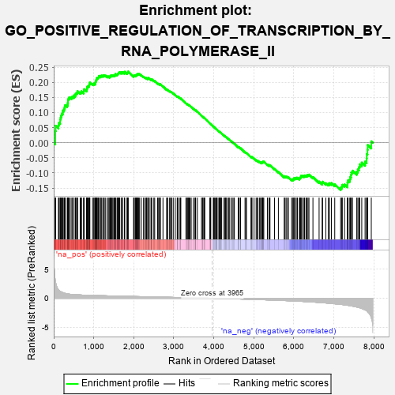
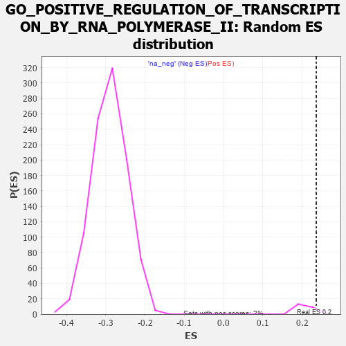

| | | Dataset | 7d |
| Phenotype | NoPhenotypeAvailable |
| Upregulated in class | na_pos |
| GeneSet | GO_POSITIVE_REGULATION_OF_TRANSCRIPTION_BY_RNA_POLYMERASE_II |
| Enrichment Score (ES) | 0.23584385 |
| Normalized Enrichment Score (NES) | 1.1063474 |
| Nominal p-value | 0.13043478 |
| FDR q-value | 0.6016324 |
| FWER p-Value | 1.0 |
Table: GSEA Results Summary

Fig 1: Enrichment plot: GO_POSITIVE_REGULATION_OF_TRANSCRIPTION_BY_RNA_POLYMERASE_II
Profile of the Running ES Score & Positions of GeneSet Members on the Rank Ordered List
| PROBE | GENE SYMBOL | GENE_TITLE | RANK IN GENE LIST | RANK METRIC SCORE | RUNNING ES | CORE ENRICHMENT | | 1 | MEOX1 | | | 39 | 3.159 | 0.0170 | Yes |
| 2 | SIX2 | | | 40 | 3.152 | 0.0389 | Yes |
| 3 | TGFB3 | | | 49 | 2.654 | 0.0564 | Yes |
| 4 | EGR4 | | | 118 | 1.439 | 0.0576 | Yes |
| 5 | SP3 | | | 131 | 1.391 | 0.0657 | Yes |
| 6 | CSRP3 | | | 161 | 1.186 | 0.0702 | Yes |
| 7 | SPI1 | | | 162 | 1.182 | 0.0785 | Yes |
| 8 | FOXF1 | | | 176 | 1.136 | 0.0847 | Yes |
| 9 | RORB | | | 189 | 1.097 | 0.0908 | Yes |
| 10 | BCL3 | | | 202 | 1.047 | 0.0965 | Yes |
| 11 | E2F5 | | | 225 | 0.992 | 0.1006 | Yes |
| 12 | SMAD5 | | | 231 | 0.979 | 0.1068 | Yes |
| 13 | LAGE3 | | | 257 | 0.914 | 0.1099 | Yes |
| 14 | TBX20 | | | 267 | 0.880 | 0.1148 | Yes |
| 15 | HGF | | | 276 | 0.870 | 0.1199 | Yes |
| 16 | TEAD4 | | | 286 | 0.846 | 0.1246 | Yes |
| 17 | DLL1 | | | 337 | 0.760 | 0.1234 | Yes |
| 18 | CNOT7 | | | 348 | 0.750 | 0.1273 | Yes |
| 19 | GSK3A | | | 351 | 0.745 | 0.1322 | Yes |
| 20 | ARNT | | | 357 | 0.741 | 0.1368 | Yes |
| 21 | GLIS3 | | | 358 | 0.738 | 0.1419 | Yes |
| 22 | LARP7 | | | 369 | 0.731 | 0.1457 | Yes |
| 23 | SOX13 | | | 380 | 0.717 | 0.1494 | Yes |
| 24 | ALX4 | | | 413 | 0.686 | 0.1500 | Yes |
| 25 | ERCC1 | | | 453 | 0.660 | 0.1495 | Yes |
| 26 | LEO1 | | | 463 | 0.655 | 0.1529 | Yes |
| 27 | MRTFB | | | 503 | 0.628 | 0.1522 | Yes |
| 28 | MYOD1 | | | 504 | 0.628 | 0.1566 | Yes |
| 29 | NR1I3 | | | 539 | 0.615 | 0.1565 | Yes |
| 30 | SRF | | | 542 | 0.615 | 0.1605 | Yes |
| 31 | JMJD6 | | | 553 | 0.613 | 0.1635 | Yes |
| 32 | APEX1 | | | 577 | 0.604 | 0.1647 | Yes |
| 33 | ALX1 | | | 590 | 0.598 | 0.1673 | Yes |
| 34 | PITX3 | | | 594 | 0.596 | 0.1711 | Yes |
| 35 | HES5 | | | 661 | 0.571 | 0.1664 | Yes |
| 36 | CDK7 | | | 686 | 0.564 | 0.1673 | Yes |
| 37 | XRCC6 | | | 694 | 0.560 | 0.1702 | Yes |
| 38 | MED6 | | | 750 | 0.545 | 0.1669 | Yes |
| 39 | ELK1 | | | 752 | 0.545 | 0.1706 | Yes |
| 40 | SETD3 | | | 754 | 0.544 | 0.1742 | Yes |
| 41 | ZIC3 | | | 760 | 0.542 | 0.1774 | Yes |
| 42 | TCEA1 | | | 821 | 0.526 | 0.1732 | Yes |
| 43 | RFX5 | | | 823 | 0.525 | 0.1767 | Yes |
| 44 | LDB2 | | | 831 | 0.523 | 0.1795 | Yes |
| 45 | PHF10 | | | 834 | 0.523 | 0.1829 | Yes |
| 46 | TFEB | | | 839 | 0.522 | 0.1860 | Yes |
| 47 | AMFR | | | 856 | 0.518 | 0.1875 | Yes |
| 48 | HDAC8 | | | 881 | 0.510 | 0.1879 | Yes |
| 49 | POGZ | | | 887 | 0.509 | 0.1908 | Yes |
| 50 | HMGB2 | | | 892 | 0.507 | 0.1938 | Yes |
| 51 | HDAC5 | | | 900 | 0.506 | 0.1965 | Yes |
| 52 | HCFC1 | | | 902 | 0.506 | 0.1999 | Yes |
| 53 | DVL3 | | | 971 | 0.490 | 0.1944 | Yes |
| 54 | MEN1 | | | 1003 | 0.483 | 0.1938 | Yes |
| 55 | HMGB4 | | | 1008 | 0.482 | 0.1966 | Yes |
| 56 | AKT1 | | | 1040 | 0.476 | 0.1959 | Yes |
| 57 | YAP1 | | | 1041 | 0.475 | 0.1992 | Yes |
| 58 | TAF9 | | | 1046 | 0.475 | 0.2020 | Yes |
| 59 | MEF2C | | | 1054 | 0.473 | 0.2044 | Yes |
| 60 | RBM15 | | | 1057 | 0.473 | 0.2074 | Yes |
| 61 | XPA | | | 1070 | 0.469 | 0.2091 | Yes |
| 62 | RAI1 | | | 1071 | 0.469 | 0.2124 | Yes |
| 63 | FOXK2 | | | 1081 | 0.467 | 0.2145 | Yes |
| 64 | BRD8 | | | 1101 | 0.463 | 0.2152 | Yes |
| 65 | MED4 | | | 1119 | 0.460 | 0.2162 | Yes |
| 66 | KMT2A | | | 1130 | 0.458 | 0.2181 | Yes |
| 67 | NCK2 | | | 1131 | 0.458 | 0.2213 | Yes |
| 68 | RFX3 | | | 1171 | 0.451 | 0.2194 | Yes |
| 69 | TFDP1 | | | 1180 | 0.450 | 0.2215 | Yes |
| 70 | MED17 | | | 1199 | 0.447 | 0.2222 | Yes |
| 71 | KAT8 | | | 1231 | 0.442 | 0.2213 | Yes |
| 72 | KAT7 | | | 1240 | 0.440 | 0.2233 | Yes |
| 73 | CDC73 | | | 1265 | 0.436 | 0.2232 | Yes |
| 74 | TEAD1 | | | 1298 | 0.428 | 0.2220 | Yes |
| 75 | EAPP | | | 1344 | 0.421 | 0.2191 | Yes |
| 76 | EIF2A | | | 1366 | 0.416 | 0.2193 | Yes |
| 77 | SSBP3 | | | 1396 | 0.411 | 0.2184 | Yes |
| 78 | CARM1 | | | 1413 | 0.408 | 0.2191 | Yes |
| 79 | P2RY1 | | | 1416 | 0.407 | 0.2217 | Yes |
| 80 | TCEA2 | | | 1434 | 0.403 | 0.2223 | Yes |
| 81 | ASCL3 | | | 1453 | 0.399 | 0.2227 | Yes |
| 82 | FOXJ3 | | | 1476 | 0.394 | 0.2226 | Yes |
| 83 | E2F4 | | | 1501 | 0.390 | 0.2222 | Yes |
| 84 | TAF6 | | | 1512 | 0.389 | 0.2236 | Yes |
| 85 | NKRF | | | 1534 | 0.386 | 0.2236 | Yes |
| 86 | DPF3 | | | 1541 | 0.385 | 0.2255 | Yes |
| 87 | NFYB | | | 1543 | 0.384 | 0.2280 | Yes |
| 88 | NFYC | | | 1582 | 0.377 | 0.2257 | Yes |
| 89 | CCNK | | | 1596 | 0.374 | 0.2266 | Yes |
| 90 | CCNC | | | 1603 | 0.373 | 0.2285 | Yes |
| 91 | KDM1B | | | 1618 | 0.371 | 0.2292 | Yes |
| 92 | TEF | | | 1624 | 0.370 | 0.2311 | Yes |
| 93 | ERG | | | 1635 | 0.367 | 0.2324 | Yes |
| 94 | RXRA | | | 1647 | 0.365 | 0.2335 | Yes |
| 95 | ELOC | | | 1685 | 0.359 | 0.2312 | Yes |
| 96 | WWOX | | | 1688 | 0.359 | 0.2334 | Yes |
| 97 | MEIS1 | | | 1723 | 0.351 | 0.2315 | Yes |
| 98 | MED14 | | | 1727 | 0.350 | 0.2335 | Yes |
| 99 | AGO2 | | | 1767 | 0.343 | 0.2308 | Yes |
| 100 | LRP5 | | | 1769 | 0.342 | 0.2331 | Yes |
| 101 | MED10 | | | 1774 | 0.341 | 0.2349 | Yes |
| 102 | RNF10 | | | 1833 | 0.331 | 0.2297 | Yes |
| 103 | GATA4 | | | 1837 | 0.330 | 0.2316 | Yes |
| 104 | TCF7 | | | 1848 | 0.328 | 0.2326 | Yes |
| 105 | NFAT5 | | | 1856 | 0.326 | 0.2340 | Yes |
| 106 | SMAD4 | | | 1860 | 0.326 | 0.2358 | Yes |
| 107 | MCRS1 | | | 1996 | 0.305 | 0.2204 | No |
| 108 | FOXO4 | | | 2004 | 0.304 | 0.2216 | No |
| 109 | RAF1 | | | 2011 | 0.303 | 0.2229 | No |
| 110 | MED19 | | | 2039 | 0.300 | 0.2215 | No |
| 111 | ZMIZ2 | | | 2052 | 0.298 | 0.2220 | No |
| 112 | IRF4 | | | 2054 | 0.298 | 0.2240 | No |
| 113 | MEIS2 | | | 2063 | 0.296 | 0.2250 | No |
| 114 | KDM3A | | | 2078 | 0.294 | 0.2252 | No |
| 115 | TAF7 | | | 2092 | 0.292 | 0.2256 | No |
| 116 | FOXD1 | | | 2093 | 0.292 | 0.2276 | No |
| 117 | BMP7 | | | 2107 | 0.290 | 0.2279 | No |
| 118 | INO80 | | | 2120 | 0.288 | 0.2284 | No |
| 119 | ATOH8 | | | 2145 | 0.285 | 0.2272 | No |
| 120 | MEIS3 | | | 2188 | 0.278 | 0.2237 | No |
| 121 | CREB1 | | | 2243 | 0.269 | 0.2185 | No |
| 122 | EAF2 | | | 2278 | 0.263 | 0.2160 | No |
| 123 | REST | | | 2308 | 0.259 | 0.2140 | No |
| 124 | MED25 | | | 2320 | 0.257 | 0.2143 | No |
| 125 | BCAS3 | | | 2352 | 0.253 | 0.2121 | No |
| 126 | CDC5L | | | 2353 | 0.253 | 0.2138 | No |
| 127 | SIN3A | | | 2361 | 0.251 | 0.2147 | No |
| 128 | HIPK2 | | | 2389 | 0.247 | 0.2129 | No |
| 129 | MET | | | 2430 | 0.240 | 0.2093 | No |
| 130 | KAT6A | | | 2444 | 0.237 | 0.2093 | No |
| 131 | KDM1A | | | 2447 | 0.237 | 0.2107 | No |
| 132 | KAT2B | | | 2502 | 0.226 | 0.2052 | No |
| 133 | SALL4 | | | 2523 | 0.223 | 0.2042 | No |
| 134 | MLX | | | 2596 | 0.214 | 0.1963 | No |
| 135 | ETV4 | | | 2621 | 0.209 | 0.1947 | No |
| 136 | KAT5 | | | 2644 | 0.206 | 0.1932 | No |
| 137 | MITF | | | 2659 | 0.205 | 0.1928 | No |
| 138 | EPC1 | | | 2663 | 0.204 | 0.1939 | No |
| 139 | RORA | | | 2730 | 0.193 | 0.1866 | No |
| 140 | KAT6B | | | 2821 | 0.180 | 0.1762 | No |
| 141 | NR2E1 | | | 2844 | 0.177 | 0.1745 | No |
| 142 | CAND1 | | | 2845 | 0.177 | 0.1758 | No |
| 143 | FGFR2 | | | 2895 | 0.167 | 0.1705 | No |
| 144 | ELL | | | 2921 | 0.163 | 0.1684 | No |
| 145 | ACVR1 | | | 2932 | 0.161 | 0.1682 | No |
| 146 | CDK13 | | | 2944 | 0.158 | 0.1679 | No |
| 147 | RRP1B | | | 2986 | 0.152 | 0.1636 | No |
| 148 | LEF1 | | | 3037 | 0.144 | 0.1581 | No |
| 149 | HDAC1 | | | 3086 | 0.138 | 0.1528 | No |
| 150 | LHX3 | | | 3092 | 0.138 | 0.1532 | No |
| 151 | RREB1 | | | 3099 | 0.137 | 0.1533 | No |
| 152 | TLX3 | | | 3140 | 0.131 | 0.1490 | No |
| 153 | PAX6 | | | 3170 | 0.127 | 0.1461 | No |
| 154 | AHR | | | 3175 | 0.126 | 0.1465 | No |
| 155 | SMAD3 | | | 3303 | 0.105 | 0.1307 | No |
| 156 | RFX4 | | | 3334 | 0.099 | 0.1275 | No |
| 157 | SMAD1 | | | 3337 | 0.099 | 0.1279 | No |
| 158 | NFIC | | | 3357 | 0.096 | 0.1261 | No |
| 159 | SMAD7 | | | 3369 | 0.093 | 0.1253 | No |
| 160 | DDX3X | | | 3388 | 0.091 | 0.1236 | No |
| 161 | MED1 | | | 3405 | 0.089 | 0.1221 | No |
| 162 | RXRG | | | 3435 | 0.085 | 0.1190 | No |
| 163 | GLI1 | | | 3489 | 0.079 | 0.1126 | No |
| 164 | HDAC3 | | | 3528 | 0.072 | 0.1082 | No |
| 165 | PIN1 | | | 3543 | 0.069 | 0.1068 | No |
| 166 | KMT2C | | | 3544 | 0.069 | 0.1073 | No |
| 167 | DMRT1 | | | 3546 | 0.068 | 0.1077 | No |
| 168 | MAPK3 | | | 3589 | 0.062 | 0.1026 | No |
| 169 | DHX9 | | | 3693 | 0.044 | 0.0895 | No |
| 170 | HSF1 | | | 3718 | 0.039 | 0.0867 | No |
| 171 | CNBP | | | 3728 | 0.037 | 0.0857 | No |
| 172 | LPIN3 | | | 3751 | 0.034 | 0.0831 | No |
| 173 | SKI | | | 3762 | 0.032 | 0.0820 | No |
| 174 | SBNO2 | | | 3774 | 0.032 | 0.0808 | No |
| 175 | NIPBL | | | 3900 | 0.010 | 0.0646 | No |
| 176 | MED21 | | | 3917 | 0.007 | 0.0626 | No |
| 177 | HINFP | | | 3920 | 0.006 | 0.0624 | No |
| 178 | GCN1 | | | 3923 | 0.006 | 0.0621 | No |
| 179 | EYA1 | | | 3987 | -0.006 | 0.0540 | No |
| 180 | DDX58 | | | 3998 | -0.007 | 0.0527 | No |
| 181 | PARP1 | | | 4014 | -0.010 | 0.0508 | No |
| 182 | VEZF1 | | | 4033 | -0.013 | 0.0486 | No |
| 183 | TAL1 | | | 4064 | -0.018 | 0.0448 | No |
| 184 | SFRP2 | | | 4065 | -0.018 | 0.0449 | No |
| 185 | TCF15 | | | 4077 | -0.020 | 0.0437 | No |
| 186 | WNT2 | | | 4084 | -0.021 | 0.0430 | No |
| 187 | ABL1 | | | 4125 | -0.027 | 0.0380 | No |
| 188 | NFYA | | | 4140 | -0.031 | 0.0364 | No |
| 189 | CDK12 | | | 4148 | -0.033 | 0.0357 | No |
| 190 | HNF4A | | | 4157 | -0.034 | 0.0349 | No |
| 191 | DDX17 | | | 4161 | -0.035 | 0.0348 | No |
| 192 | PDX1 | | | 4179 | -0.038 | 0.0328 | No |
| 193 | GLMP | | | 4197 | -0.041 | 0.0309 | No |
| 194 | PAX5 | | | 4255 | -0.051 | 0.0238 | No |
| 195 | RSF1 | | | 4267 | -0.053 | 0.0228 | No |
| 196 | USF1 | | | 4296 | -0.059 | 0.0195 | No |
| 197 | TBX2 | | | 4303 | -0.060 | 0.0192 | No |
| 198 | CDK8 | | | 4308 | -0.061 | 0.0191 | No |
| 199 | ADRB2 | | | 4352 | -0.068 | 0.0139 | No |
| 200 | CEBPZ | | | 4382 | -0.073 | 0.0107 | No |
| 201 | ARF4 | | | 4383 | -0.073 | 0.0112 | No |
| 202 | MYDGF | | | 4429 | -0.081 | 0.0059 | No |
| 203 | ERCC6 | | | 4464 | -0.087 | 0.0021 | No |
| 204 | MEF2A | | | 4499 | -0.095 | -0.0017 | No |
| 205 | SNW1 | | | 4514 | -0.096 | -0.0028 | No |
| 206 | GATA3 | | | 4614 | -0.120 | -0.0149 | No |
| 207 | ATOH1 | | | 4615 | -0.121 | -0.0141 | No |
| 208 | LMX1A | | | 4631 | -0.124 | -0.0151 | No |
| 209 | TTC5 | | | 4665 | -0.131 | -0.0185 | No |
| 210 | FOXD3 | | | 4667 | -0.132 | -0.0177 | No |
| 211 | WBP2 | | | 4780 | -0.153 | -0.0313 | No |
| 212 | TERT | | | 4801 | -0.157 | -0.0328 | No |
| 213 | FBXW7 | | | 4816 | -0.161 | -0.0335 | No |
| 214 | ATRX | | | 4929 | -0.184 | -0.0468 | No |
| 215 | EP300 | | | 4941 | -0.186 | -0.0469 | No |
| 216 | PRKDC | | | 4955 | -0.189 | -0.0473 | No |
| 217 | KLF4 | | | 5005 | -0.198 | -0.0523 | No |
| 218 | DDX41 | | | 5058 | -0.211 | -0.0576 | No |
| 219 | DRD2 | | | 5088 | -0.221 | -0.0598 | No |
| 220 | ETS2 | | | 5096 | -0.223 | -0.0591 | No |
| 221 | FLCN | | | 5140 | -0.235 | -0.0631 | No |
| 222 | TBX1 | | | 5166 | -0.241 | -0.0647 | No |
| 223 | SMO | | | 5195 | -0.247 | -0.0666 | No |
| 224 | ASH1L | | | 5203 | -0.248 | -0.0658 | No |
| 225 | ATM | | | 5210 | -0.249 | -0.0648 | No |
| 226 | TOP2A | | | 5216 | -0.250 | -0.0637 | No |
| 227 | TMF1 | | | 5225 | -0.251 | -0.0630 | No |
| 228 | USF2 | | | 5232 | -0.252 | -0.0621 | No |
| 229 | FOXJ2 | | | 5249 | -0.257 | -0.0624 | No |
| 230 | TCF21 | | | 5340 | -0.283 | -0.0721 | No |
| 231 | GRIN1 | | | 5381 | -0.291 | -0.0753 | No |
| 232 | FZD5 | | | 5386 | -0.292 | -0.0738 | No |
| 233 | SOX8 | | | 5404 | -0.296 | -0.0739 | No |
| 234 | VDR | | | 5517 | -0.325 | -0.0862 | No |
| 235 | GNL3 | | | 5614 | -0.349 | -0.0963 | No |
| 236 | TLR2 | | | 5761 | -0.395 | -0.1126 | No |
| 237 | ELF3 | | | 5768 | -0.396 | -0.1106 | No |
| 238 | CCNT2 | | | 5804 | -0.406 | -0.1123 | No |
| 239 | IRX6 | | | 5829 | -0.414 | -0.1125 | No |
| 240 | STAT4 | | | 5867 | -0.424 | -0.1144 | No |
| 241 | LDB1 | | | 5944 | -0.451 | -0.1211 | No |
| 242 | GABPA | | | 5977 | -0.464 | -0.1221 | No |
| 243 | SCAP | | | 5986 | -0.466 | -0.1199 | No |
| 244 | PTPRN | | | 6007 | -0.474 | -0.1192 | No |
| 245 | XBP1 | | | 6011 | -0.475 | -0.1162 | No |
| 246 | NR2E3 | | | 6048 | -0.488 | -0.1175 | No |
| 247 | JAG1 | | | 6060 | -0.494 | -0.1155 | No |
| 248 | UBB | | | 6090 | -0.503 | -0.1158 | No |
| 249 | TNKS | | | 6138 | -0.516 | -0.1183 | No |
| 250 | FEZF2 | | | 6150 | -0.519 | -0.1161 | No |
| 251 | EGR1 | | | 6165 | -0.527 | -0.1143 | No |
| 252 | THRB | | | 6178 | -0.531 | -0.1121 | No |
| 253 | KLF2 | | | 6182 | -0.532 | -0.1088 | No |
| 254 | SMAD2 | | | 6216 | -0.541 | -0.1093 | No |
| 255 | TFAP4 | | | 6254 | -0.556 | -0.1103 | No |
| 256 | ZBED1 | | | 6268 | -0.561 | -0.1081 | No |
| 257 | LMO7 | | | 6303 | -0.578 | -0.1085 | No |
| 258 | ELF1 | | | 6328 | -0.587 | -0.1075 | No |
| 259 | GALR2 | | | 6355 | -0.599 | -0.1067 | No |
| 260 | CDON | | | 6378 | -0.607 | -0.1053 | No |
| 261 | SOX2 | | | 6477 | -0.652 | -0.1136 | No |
| 262 | WWTR1 | | | 6631 | -0.729 | -0.1284 | No |
| 263 | EGFR | | | 6708 | -0.765 | -0.1330 | No |
| 264 | DMRT2 | | | 6718 | -0.768 | -0.1288 | No |
| 265 | TBPL1 | | | 6798 | -0.814 | -0.1334 | No |
| 266 | AHI1 | | | 6860 | -0.848 | -0.1354 | No |
| 267 | HEXB | | | 6894 | -0.864 | -0.1337 | No |
| 268 | DOT1L | | | 6939 | -0.897 | -0.1332 | No |
| 269 | NR4A1 | | | 7022 | -0.951 | -0.1372 | No |
| 270 | AR | | | 7169 | -1.046 | -0.1489 | No |
| 271 | OVOL2 | | | 7197 | -1.068 | -0.1450 | No |
| 272 | IFT74 | | | 7211 | -1.085 | -0.1391 | No |
| 273 | CDK9 | | | 7266 | -1.138 | -0.1382 | No |
| 274 | SPAG8 | | | 7337 | -1.211 | -0.1389 | No |
| 275 | OVOL1 | | | 7341 | -1.214 | -0.1308 | No |
| 276 | PLAC8 | | | 7355 | -1.223 | -0.1240 | No |
| 277 | CELA1 | | | 7399 | -1.265 | -0.1208 | No |
| 278 | UBC | | | 7410 | -1.274 | -0.1132 | No |
| 279 | KLF5 | | | 7429 | -1.304 | -0.1064 | No |
| 280 | SPDEF | | | 7436 | -1.313 | -0.0981 | No |
| 281 | HELZ2 | | | 7466 | -1.356 | -0.0924 | No |
| 282 | LITAF | | | 7572 | -1.511 | -0.0955 | No |
| 283 | ELF4 | | | 7600 | -1.551 | -0.0882 | No |
| 284 | PKD1 | | | 7628 | -1.611 | -0.0805 | No |
| 285 | PTF1A | | | 7646 | -1.637 | -0.0713 | No |
| 286 | MYO6 | | | 7697 | -1.753 | -0.0656 | No |
| 287 | ST18 | | | 7780 | -2.007 | -0.0623 | No |
| 288 | TRAF6 | | | 7818 | -2.157 | -0.0520 | No |
| 289 | PKD2 | | | 7822 | -2.167 | -0.0373 | No |
| 290 | SP1 | | | 7840 | -2.321 | -0.0233 | No |
| 291 | DLX5 | | | 7845 | -2.378 | -0.0073 | No |
| 292 | ARRB1 | | | 7935 | -3.377 | 0.0047 | No |
Table: GSEA details [plain text format]

Fig 2: GO_POSITIVE_REGULATION_OF_TRANSCRIPTION_BY_RNA_POLYMERASE_II: Random ES distribution
Gene set null distribution of ES for GO_POSITIVE_REGULATION_OF_TRANSCRIPTION_BY_RNA_POLYMERASE_II